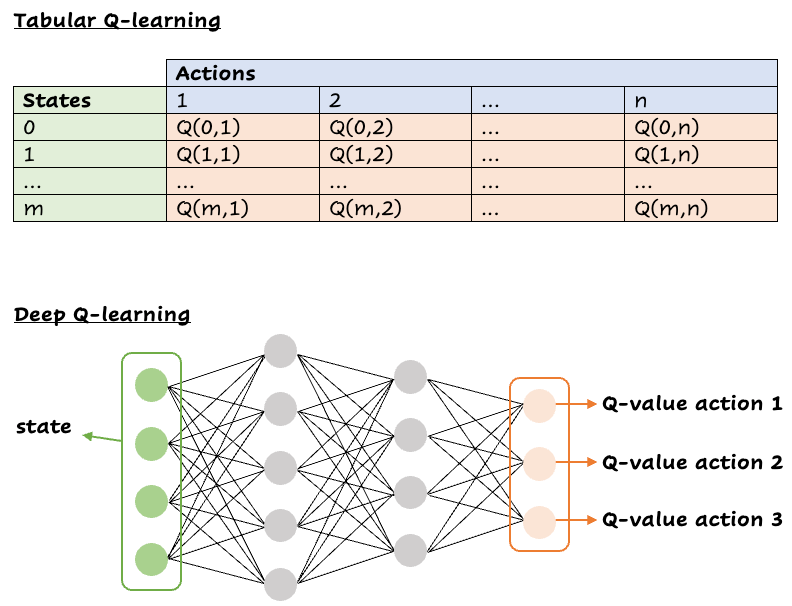
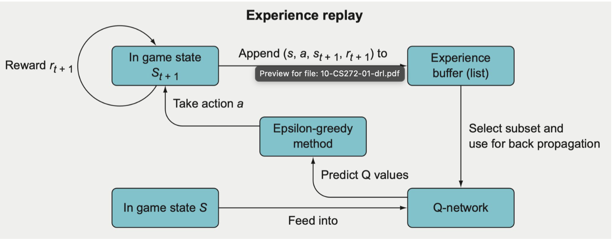
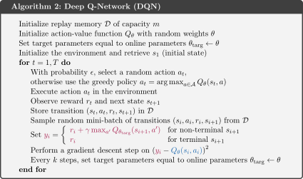

DQN in one sentence
DQN is Q-learning with a neural network standing in for the Q-table.
Given a state, the network looks at the situation and outputs one number for each possible action. That number is the action’s estimated long-term value.
If you remember only one thing: DQN learns to answer, “If I am in this situation, how good is each action likely to be?” Then it chooses the action with the highest answer.
Begin with the Q-table
Suppose an agent is playing a tiny game. Its state might be “the ball is above me”, and its actions might be left, right, and stay.
A Q-table stores one value for every state–action pair:
The agent looks across the row for its current state and chooses the action with the largest value. The table is simply a collection of memories: “In this situation, this action eventually worked this well.”
State
What the agent currently sees.
Action
What the agent can do next.
Q-value
The expected future reward after choosing that action.
Policy
Choose the action with the largest Q-value.
Why the table breaks
Tables work when there are only a few states. But an image from an Atari game may contain tens of thousands of pixels. Even if each pixel had only 256 possible values, the number of possible images would be unimaginably large.
Worse, the agent will almost never see exactly the same image twice. A table treats two nearly identical images as completely unrelated entries.
We need generalization: if the agent learns that a ball moving left is dangerous, it should use that knowledge when the ball is slightly higher or lower—not start from zero every time.
Replace the table with a neural network
Instead of storing a separate number for every state–action pair, give the state to a neural network. Let its parameters be θ:
The network receives one state and produces all action values at once:
Now similar states can produce similar answers because the same weights are reused. That is the key benefit of function approximation.

The big substitution: Q-table lookup becomes neural-network prediction. The goal is still exactly the same: estimate Q-values and choose the best action.
Where should the network move?
After taking action At, the agent receives reward Rt+1 and sees the next state St+1. Q-learning gives us a target: immediate reward plus the best estimated future value.
The network’s current prediction is Q(St, At; θ). The error is:
Gradient descent changes θ so the prediction moves closer to the target. If the target says “this action was worth 7” but the network predicted 4, training pushes that prediction upward.
Important: the target is not a mysterious label supplied by a teacher. The agent builds it from the reward it just received and its own estimate of what can happen next.
Why naïve neural Q-learning is unstable
Neural networks usually learn well from a large, varied dataset whose examples are reasonably independent. An agent does not naturally produce that kind of data.
Correlated experiences
Consecutive frames look almost identical. Training on them one after another gives the network a narrow, repetitive view.
Moving targets
The target uses the same network that is being updated. The answer moves while the network is trying to chase it.
These two problems can make learning oscillate, diverge, or erase useful behavior. The original DQN paper introduced two stabilizers.
Experience replay
Every interaction creates a small experience:
DQN stores these experiences in a replay memory. During training, it randomly samples a mini-batch from that memory instead of learning only from the most recent few steps.

- Play and collect experiences.
- Put each experience in replay memory.
- Randomly sample a small batch.
- Learn from that batch.
Random sampling breaks up the time-order correlation. Old experiences can also be used many times, which makes learning more data-efficient.
Replay turns the agent’s stream of highly related moments into a more shuffled training dataset.
The target network
DQN keeps two networks:
Online network
Q(s,a; θ). Learns every training step and chooses actions.
Target network
Q(s,a; θ−). Produces the target and is held still for a while.
The target becomes:
Every so often, DQN copies the online weights into the target network:

For many updates, the target stays fixed. The online network can then learn toward a stable reference instead of chasing a target that changes after every gradient step.
The two fixes in plain English: replay makes the examples less correlated; the target network makes the answers less twitchy.
The DQN algorithm
- Initialize the online network with random weights θ.
- Copy those weights into the target network: θ− ← θ.
- Observe the current state St.
- Choose an action using ε-greedy exploration: usually take the best predicted action, but sometimes try a random action.
- Take the action and observe reward Rt+1 and next state St+1.
- Store the transition in replay memory.
- Sample a random mini-batch from memory.
- Build each target using the target network.
- Train the online network to reduce the squared prediction error.
- Periodically copy the online weights into the target network.

That is DQN. Everything else—network architecture, replay size, batch size, learning rate, discount factor, and exploration schedule—is an implementation choice around this loop.
What each piece is doing
QNetwork
The neural approximation of the Q-table. Its output has one entry per action.
ReplayBuffer
Stores (state, action, reward, next_state, done) and returns random mini-batches.
select_action
Implements ε-greedy exploration: random action with probability ε, best predicted action otherwise.
chosen_q
online_net(states) gives all action values; gather keeps the value of the action actually taken.
target_q
The Bellman target: reward plus discounted best next-state value from the target network.
loss.backward()
Computes gradients showing how the online network should change to reduce prediction error.
Notice the separation: optimizer.step() updates online_net. The target network is updated only by the occasional load_state_dict copy.
The line target_net.eval() does not freeze its weights by itself; it switches evaluation behavior for layers such as dropout or batch normalization. The real stability comes from never passing target-network outputs into the optimizer’s gradient path and copying its parameters only periodically.
The code, piece by piece
Here is a complete implementation broken into small, cumulative pieces. Copy the pieces in order into one Python file; each piece supplies something used by the next one.
0. Imports, environment, and settings
import random
from collections import deque, namedtuple
import gymnasium as gym
import numpy as np
import torch
import torch.nn as nn
import torch.optim as optim
device = torch.device("cuda" if torch.cuda.is_available() else "cpu")
env = gym.make("CartPole-v1")
state_dim = env.observation_space.shape[0]
action_dim = env.action_space.n
gamma = 0.99
batch_size = 128
target_update_every = 1_000These imports provide the environment, tensors, neural-network layers, optimizer, and replay-memory tools. The environment tells us the size of a state and how many actions exist.
1. Define the Q-network and create two copies
class QNetwork(nn.Module):
def __init__(self):
super().__init__()
self.layers = nn.Sequential(
nn.Linear(state_dim, 128),
nn.ReLU(),
nn.Linear(128, 128),
nn.ReLU(),
nn.Linear(128, action_dim),
)
def forward(self, state):
return self.layers(state)
online_net = QNetwork().to(device)
target_net = QNetwork().to(device)
target_net.load_state_dict(online_net.state_dict())
target_net.eval()
optimizer = optim.AdamW(online_net.parameters(), lr=1e-3)At the beginning, both networks have identical weights. The online network will learn every step. The target network will provide the relatively stable answer used to build the target.
2. Define ε-greedy action selection
epsilon_start, epsilon_end, epsilon_decay = 1.0, 0.05, 10_000
steps_done = 0
def select_action(state):
global steps_done
epsilon = epsilon_end + (epsilon_start - epsilon_end) * np.exp(
-steps_done / epsilon_decay
)
steps_done += 1
if random.random() < epsilon:
return env.action_space.sample()
with torch.no_grad():
state_tensor = torch.as_tensor(state, dtype=torch.float32, device=device)
q_values = online_net(state_tensor.unsqueeze(0))
return q_values.argmax(dim=1).item()If there are two actions, the output might be [3.2, 1.7]. The network is saying: “in this state, action 0 currently looks better.” The network does not output an action directly; it outputs Q-values, and argmax chooses the largest one.
3. Sometimes explore with ε-greedy
if random.random() < epsilon:
action = env.action_space.sample() # explore
else:
action = q_values.argmax(dim=1).item() # exploitWith probability ε, the agent tries a random action. Otherwise, it uses what the network currently believes. ε starts large so the agent explores, then gradually becomes smaller so the agent uses what it has learned.
4. Build the replay buffer and store experiences
Transition = namedtuple(
"Transition", ["state", "action", "reward", "next_state", "done"]
)
class ReplayBuffer:
def __init__(self, capacity):
self.memory = deque(maxlen=capacity)
def push(self, *args):
self.memory.append(Transition(*args))
def sample(self, batch_size):
return random.sample(self.memory, batch_size)
def __len__(self):
return len(self.memory)
replay = ReplayBuffer(capacity=50_000)
replay.push(state, action, reward, next_state, done)One stored transition is a five-part memory:
It records what the agent saw, did, received, saw next, and whether the episode ended.
5. Ask the online network what happened
def optimize_model():
if len(replay) < batch_size:
return
batch = Transition(*zip(*replay.sample(batch_size)))
states = torch.as_tensor(np.asarray(batch.state), dtype=torch.float32, device=device)
actions = torch.as_tensor(batch.action, dtype=torch.long, device=device).unsqueeze(1)
rewards = torch.as_tensor(batch.reward, dtype=torch.float32, device=device)
dones = torch.as_tensor(batch.done, dtype=torch.bool, device=device)
all_q_values = online_net(states)
chosen_q = all_q_values.gather(1, actions).squeeze(1)all_q_values contains a value for every possible action. gather selects only the action that was actually taken. This is the prediction that will be corrected.
6. Build the Bellman target
with torch.no_grad():
non_final = ~dones
next_q = torch.zeros(batch_size, device=device)
if non_final.any():
next_states = torch.as_tensor(
np.asarray([s for s, done in zip(batch.next_state, batch.done) if not done]),
dtype=torch.float32,
device=device,
)
best_next_q = target_net(next_states).max(dim=1).values
next_q[non_final] = best_next_q
target_q = rewards + gamma * next_qThe target network looks at the next state and estimates the best future value. We add the immediate reward to the discounted future value.
torch.no_grad() is important: the target is treated as a fixed answer for this training step. We do not send gradients into the target network.
7. Compare prediction with target
loss = nn.functional.smooth_l1_loss(chosen_q, target_q)
optimizer.zero_grad()
loss.backward()
torch.nn.utils.clip_grad_norm_(online_net.parameters(), max_norm=10.0)
optimizer.step()The loss measures how far the online network’s prediction is from the Bellman target. Backpropagation calculates how to change the online network’s weights, and optimizer.step() applies that change.
8. Periodically refresh the target network
if steps_done % target_update_every == 0:
target_net.load_state_dict(online_net.state_dict())The target network is not updated after every gradient step. We copy the online network’s weights only occasionally. That pause is what stops the target from moving too quickly.
9. Run the environment loop
for episode in range(500):
state, _ = env.reset()
for _ in range(1_000):
action = select_action(state)
next_state, reward, terminated, truncated, _ = env.step(action)
done = terminated or truncated
replay.push(state, action, reward, next_state, done)
optimize_model()
state = next_state
if steps_done % target_update_every == 0:
target_net.load_state_dict(online_net.state_dict())
if done:
break
env.close()This is the loop that connects everything: observe, choose, act, store, learn, and occasionally refresh the target network.
The complete mental model: predict with the online network, compare against a target built with the quieter target network, learn from the error, and occasionally refresh the target network.
Double DQN
The difference comes down to how each one computes the target value used to train the Q-network.
DQN
The target for a transition (s, a, r, s′) is:
The target network both selects the best next action and evaluates it. Because the max is taken over noisy estimates, it systematically picks up positive noise, so Q-values get overestimated. That bias can compound through bootstrapping and destabilize learning or lead to poor policies.
Double DQN (DDQN)
DDQN decouples selection from evaluation:
- The online network picks the action.
- The target network scores that action.
Since the two networks have different errors, it is much less likely that the same noise inflates both the choice and its value, which reduces overestimation.
Practical points
- It is a one-line change to DQN. No new networks or hyperparameters are needed, since the target network already exists.
- It usually gives more accurate value estimates and more stable training, and often better final performance, especially in environments where overestimation hurts.
- It is not a perfect fix: the two networks are correlated because the target is a lagged copy, so some overestimation remains, but it is substantially reduced.
- Compute cost is essentially the same, with one extra forward pass of the online network on s′.
What the original DQN paper added
The original paper, Playing Atari with Deep Reinforcement Learning, showed that one algorithm could learn directly from pixels and play several Atari 2600 games.
Its important recipe was not simply “put a neural network into Q-learning.” It combined:
- raw game frames as input, processed by a convolutional neural network;
- one Q-value output for each available joystick action;
- experience replay;
- a periodically updated target network;
- ε-greedy exploration;
- clipped rewards to keep the learning signal manageable.
The paper’s deeper lesson is that a neural network can learn useful visual features and action values together when the learning signal is stabilized carefully.
Read the paper
Playing Atari with Deep Reinforcement Learning by Volodymyr Mnih and colleagues. We will return to the paper’s architecture, preprocessing, training details, and results as we continue.
The “wow, I get it” summary
Q-learning says: estimate how good each action is, then choose the best one.
DQN says: use a neural network to estimate those action values when a table is too small and too rigid.
Because neural networks make the learning problem unstable, DQN adds:
- experience replay to shuffle and reuse experiences;
- a target network to keep the learning target steady for a while.
So DQN is not a brand-new idea replacing Q-learning. It is Q-learning scaled up with function approximation and stabilized with two carefully chosen tricks.
Next: a worked numerical example, pseudocode, and a closer reading of the DQN paper’s Atari setup.